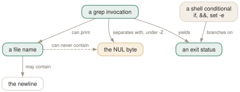

Day 09
grep in a pipeline
Exit status as control flow, NUL as a separator, and the ways a script gets this wrong.
By the end of today you can
- write a grep conditional that distinguishes “no match” from “could not read the file”
- handle file names containing spaces, quotes and newlines without thinking about quoting
- explain why a grep in a
set -escript aborts it, and what to write instead
In a script, the output is not the answer
Interactively, grep's job is to print lines you read. In a script it usually has a different job: to answer a question, or to hand a list of file names to something else. Both of those go wrong in ways that are invisible until the day they matter, and both were set up on Day 1.

set -e — ever looks at, so “found nothing” and “could not read it” must be told apart deliberately. And the dashed aspect is the whole justification for -Z, find -print0 and xargs -0: a NUL is the one byte that cannot appear inside a name, so it is the only unambiguous separator.The status, and set -e
Three statuses, from Day 1: 0 selected something, 1 selected nothing, 2 something went wrong. The shell collapses all of that into “zero or non-zero”, which is fine for a deliberate if and catastrophic under set -e.
$ bash -c 'set -e; grep zzz /etc/passwd; echo REACHED'
$ echo $?
1
REACHED never printed. The grep was there to report a count, found nothing to report, and took the script down with it. This is the most common way grep breaks a CI pipeline, and it surfaces on the first clean build rather than on a broken one.
... || true- Swallows everything, including a missing or unreadable file. Quick, and quietly wrong.
... || [ $? -eq 1 ]- Succeeds only on “no match”. A real error still propagates. This is the one to memorise.
if grep -q ...; then- Best of all when you only want a yes or no:
set -enever fires on the condition of anif, and-qstops reading at the first match.
When you need all three answers, spell them out:
grep -q ERROR "$log"
case $? in
0) alert "errors found" ;;
1) : ;; # clean - nothing to do
*) die "cannot read $log" ;;
esac
The one byte a file name cannot contain
A Unix file name may contain every byte except / and NUL. In particular it may contain spaces, quotes, backslashes, and newlines. So a newline-separated list of file names is ambiguous, and no amount of quoting downstream can repair it.
$ printf 'needle\n' > $'nl/we\nird.txt'
$ grep -rl needle nl
nl/we
ird.txt
$ grep -rlZ needle nl | xargs -0 grep -c needle
1
One file, printed as what looks like two. -Z writes a NUL after each file name instead of a newline, and xargs -0 splits on NUL, so the ambiguity cannot arise. Use them together as a unit, always, even on file names you believe are tame.
-z has one genuinely common use, which is matching across newlines: with NUL as the terminator, . and \n stop being special to the line-splitter, so a pattern can span lines. That is mostly a -P technique and it is tomorrow's page.
$ find src -name '*.c' -not -path '*/generated/*' -print0 \
> | xargs -0 -r grep -Hn TODO
The -r on xargs matters: without it, an empty list still runs the command once, with no file operands, at which point grep reads standard input and appears to hang.
Buffering, and live pipelines
When grep's output is a terminal it is line-buffered; when it is a pipe it is block-buffered, because that is what the C library does. In a batch pipeline this is what you want. In a live one it looks like grep has stopped working.
$ tail -F app.log | grep --line-buffered ERROR | while read l; do alert "$l"; done
Without --line-buffered the alerts arrive in bursts of several kilobytes. With it, immediately. The performance penalty the manual mentions is real for bulk work and irrelevant for a live tail.
Today's habit
Two reflexes. When grep is answering a question, use -q and handle status 2 separately from status 1. When grep is producing file names for another program, use -Z and xargs -0 — not sometimes, always.
# ~/grep-recipes.sh
#
# Day 9: the three-way check. 'no match' is not an error; unreadable is.
grep_check() {
grep -q "$1" "$2"
case $? in
0) return 0 ;;
1) return 1 ;;
*) echo "grep: cannot read $2" >&2; exit 2 ;;
esac
}
# Day 9: survives spaces, quotes and newlines in file names. Always.
grep -rlZ PATTERN . | xargs -0 -r sed -i 's/old/new/g'
# Day 9: grep in a live pipeline needs --line-buffered or it looks dead.
tail -F app.log | grep --line-buffered ERROR
New vocabulary
Commands
| Command | Does |
|---|---|
if grep -q PAT f; then | The correct predicate form. No output, stops at the first match. |
grep -q PAT f || [ $? -eq 1 ] | Succeed on “no match”, still fail on a genuine error. |
grep -rlZ PAT . | xargs -0 CMD | NUL-separated file names, safe for every legal name. |
find . -name '*.c' -print0 | xargs -0 grep -Hn PAT | When the filter needs directories, not just base names. |
${PIPESTATUS[0]} | bash: the status of the first command in the pipeline, not the last. |
ps aux | grep '[s]shd' | The bracket trick: the pattern no longer matches its own command line. |
Options
| Option | Does |
|---|---|
-Z, --null | Write a NUL after each file name instead of a newline. Pairs with xargs -0. |
-z, --null-data | Treat input and output lines as NUL-terminated. Not the same option as -Z. |
--line-buffered | Flush after every output line. Costs throughput; needed when feeding a live tail. |
Drillsdo these in a real terminal, today
Self-check
Answer out loud first, then unfold.
A deployment script starts with set -euo pipefail. Halfway down there is grep -c WARN build.log purely for the log output. The build is clean, and the deployment aborts.
A clean build means no WARN lines, which means grep exits 1, which set -e treats as a fatal error. The script is behaving exactly as written: grep's “I found nothing” and “I failed” are the same thing to the shell, because the shell only sees non-zero.
The blunt fix is || true, which also swallows a genuinely unreadable file. The honest fix keeps the distinction: grep -c WARN build.log || [ $? -eq 1 ]. This is the single most common way grep breaks a CI pipeline, and it always shows up on the day everything is working.
Why does grep -rl TODO . | xargs rm occasionally delete the wrong file, and why does adding quotes not fix it?
Because -l separates file names with newlines, and a file name may legally contain a newline — along with spaces, quotes, backslashes and almost everything else. xargs then splits on whitespace and unquotes what it finds, so one file called we\nird.txt arrives as two names, neither of which exists, and a file called a b.txt arrives as a and b.txt.
Quoting cannot help because the damage is done before your quotes are read: the ambiguity is in the byte stream between the two processes. The fix is to change the separator to the one byte a file name can never contain — grep -rlZ TODO . | xargs -0 rm. That is the entire reason -Z, find -print0 and xargs -0 exist.
A monitoring command is tail -F app.log | grep ERROR | while read l; do alert "$l"; done. Errors appear in the log immediately but alerts arrive minutes late, in bursts.
grep's standard output is a pipe, not a terminal, so the C library buffers it in blocks of a few kilobytes. grep is matching your lines the instant they arrive and then sitting on them until the buffer fills or the process ends.
--line-buffered makes grep flush after each output line and the bursts disappear. The manual warns it “can cause a performance penalty”, which is true and irrelevant here — you are processing a handful of lines a minute. Use it whenever grep sits in the middle of a live pipeline, and leave it off when grep is processing a file as fast as it can.
ps aux | grep sshd always shows one extra line that is the grep itself. Why does ps aux | grep '[s]shd' not, given that it matches the same processes?
Both commands start at the same time, so ps sees grep's command line — which contains the pattern you typed. In the first case the literal text sshd is in that command line, so it matches itself.
In the second, grep's command line contains the characters [s]shd, while the pattern [s]shd matches the text sshd — a bracket expression of one character followed by three literals. The pattern and the text it matches are different strings, so the self-match disappears. It is a genuinely clever hack, and pgrep is the tool that makes it unnecessary.
Cheat sheet
if grep -q PAT f; then ... # the predicate form; set -e never fires here
grep PAT f || [ $? -eq 1 ] # 'no match' is fine, a real error still fails
grep PAT f || true # swallows real errors too - usually wrong
# set -e + a grep that matches nothing = your script exits. The classic.
# in a pipeline you get the LAST status: use ${PIPESTATUS[0]} in bash.
# status 141 = SIGPIPE, normal when the reader (head) quit early.
grep -rlZ PAT . | xargs -0 -r CMD # NUL separators - the ONLY safe way
find . -name '*.c' -print0 | xargs -0 -r grep -Hn PAT
# a file name may contain spaces, quotes and NEWLINES; never a NUL.
# xargs -r: without it an empty list still runs CMD, and grep hangs on stdin.
-Z NUL after each FILE NAME -z NUL terminates each INPUT/OUTPUT LINE
--line-buffered flush per line; needed whenever grep feeds a live pipeline
ps aux | grep '[s]shd' # the bracket trick: no self-match
Everything through Day 09
Commands
| Command | Does |
|---|---|
grep root /etc/passwd | Search one named file. No filename prefix on the output. |
grep root /etc/passwd /etc/group | Search several. Output gains a file: prefix automatically. |
grep root | No file operand: read standard input. From a terminal, this waits for you. |
grep -r root | No file operand and -r: search the working directory instead. |
cmd | grep root - | A file operand of - is standard input, mixable with real files. |
echo $? | Read the status grep just returned. The habit this whole day is about. |
grep -e -v file.txt | Search for the literal string -v. -e protects a pattern that starts with a dash. |
grep -f patterns.txt data.txt | Take patterns from a file, one per line. The workhorse for long lists. |
cut -f1 ids.csv | grep -f - data.txt | Patterns from a pipe. -f - reads them from standard input. |
if grep -q PAT f; then | The correct predicate form. No output, stops at the first match. |
grep -q PAT f || [ $? -eq 1 ] | Succeed on “no match”, still fail on a genuine error. |
grep -rlZ PAT . | xargs -0 CMD | NUL-separated file names, safe for every legal name. |
find . -name '*.c' -print0 | xargs -0 grep -Hn PAT | When the filter needs directories, not just base names. |
${PIPESTATUS[0]} | bash: the status of the first command in the pipeline, not the last. |
ps aux | grep '[s]shd' | The bracket trick: the pattern no longer matches its own command line. |
Options
| Option | Does |
|---|---|
-V, --version | Print the version and exit. Know which grep you are actually running. |
--help | Print the option summary and exit. Shorter and better organised than the man page. |
-- | End of options. Everything after it is a pattern or a filename, never a flag. |
-i, --ignore-case | Match regardless of case. What counts as “the same letter” depends on the locale. |
--no-ignore-case | Cancel an earlier -i. The last of the two on the line wins. |
-v, --invert-match | Select the lines that did not match. Applied once, after all patterns. |
-w, --word-regexp | Require the matched substring to be bounded by non-word characters or line ends. |
-x, --line-regexp | Require the match to be the entire line. Silently overrides -w. |
-e PAT, --regexp=PAT | Add a pattern. Repeatable, and combinable with -f. |
-f FILE, --file=FILE | Add every line of FILE as a pattern. An empty file matches nothing at all. |
-y | Undocumented synonym for -i. In neither the man page nor --help, but 3.12 accepts it. |
. | Match any single character. Whether it matches an encoding error is unspecified. |
[abc] | Match one character from the list. |
[^abc] | Match one character not in the list. The ^ must come first. |
[a-d] | A range. In the C locale, ASCII order; elsewhere the standard says it is unspecified. |
[[:digit:]] | A named class. The outer brackets are yours, the inner ones are part of the name. |
^ and $ | Anchor to the start and end of a line. They match a position, not a character. |
\< and \> | Anchor to the start and end of a word. A GNU extension. |
\b and \B | Anchor at, and not at, a word edge. \b is either edge; \< is only the left. |
\w and \W | Shorthand for [_[:alnum:]] and [^_[:alnum:]]. Note the underscore. |
* | Zero or more of the preceding item. The only repetition operator BRE spells the same way. |
? and + | At most one, and at least one. In BRE you must write \? and \+. |
{n,m} | Between n and m times. {,m} with no lower bound is a GNU extension. |
| | Alternation, and the loosest-binding operator there is. BRE spells it \|. |
(...) | Group, to override precedence. BRE spells it \(...\). |
\1 … \9 | Re-match the exact text the nth group captured. Slow, and worth avoiding. |
-E, --extended-regexp | Extended syntax: the operators above are bare. What you usually want. |
-G, --basic-regexp | Basic syntax: ? + { | ( ) need backslashes. The default. |
-F, --fixed-strings | No regex at all. Every pattern is a literal string, and it is the fastest matcher. |
-c, --count | Print the number of selected lines per file, not the number of matches. |
-l, --files-with-matches | Print each filename that had a match, and stop reading that file at the first one. |
-L, --files-without-match | Print each filename that had none. Read the gotcha about its exit status. |
-o, --only-matching | Print each matched substring on its own line. Non-overlapping, empty matches dropped. |
-q, --quiet, --silent | Print nothing; exit 0 on the first match. The right way to use grep as a test. |
-m NUM, --max-count=NUM | Stop after NUM selected lines. -m0 reads nothing at all. |
-s, --no-messages | Suppress error messages about unreadable files. Does not change the exit status. |
--color[=WHEN] | WHEN is never, always or auto. Nothing else, and abbreviations are refused. |
GREP_COLORS | Colon-separated SGR capabilities. Defaults to ms=01;31:mc=01;31:sl=:cx=:fn=35:ln=32:bn=32:se=36. |
-A NUM, --after-context=NUM | Print NUM lines after each match. |
-B NUM, --before-context=NUM | Print NUM lines before each match. |
-C NUM, --context=NUM | Print NUM lines on both sides. |
-NUM | Bare number: identical to -C NUM. grep -2 pat is the one worth typing. |
--group-separator=SEP | Print SEP instead of -- between non-adjacent groups. |
--no-group-separator | Print no separator at all. What you want before piping into another tool. |
-n, --line-number | Prefix each output line with its 1-based line number. |
-H, --with-filename | Force the filename prefix. Automatic with two or more files. |
-h, --no-filename | Suppress the filename prefix. Automatic with one file. |
-b, --byte-offset | Prefix the 0-based byte offset. With -o, the offset of the match itself. |
-T, --initial-tab | Line the content up on a tab stop, and pad the numeric fields to a fixed width. |
--label=LABEL | Call standard input LABEL instead of (standard input). |
-r, --recursive | Descend into directories, following symbolic links only if named on the command line. |
-R, --dereference-recursive | Descend, following every symbolic link. Can loop forever on a cyclic tree. |
-d ACTION, --directories=ACTION | read (the default, which fails on Linux), skip, or recurse — the last being -r. |
-D ACTION, --devices=ACTION | read (default) or skip, for devices, FIFOs and sockets. skip stops grep blocking on a pipe. |
--include=GLOB | Search only files whose base name matches GLOB. |
--exclude=GLOB | Skip files whose base name matches GLOB. |
--exclude-dir=GLOB | Skip directories whose base name matches GLOB. Trailing slashes are ignored. |
--exclude-from=FILE | Read a list of --exclude globs from a file, one per line. |
--binary-files=TYPE | TYPE is binary (default), text or without-match. |
-a, --text | Treat binary input as text. Equivalent to --binary-files=text. |
-I | Treat binary input as non-matching. Equivalent to --binary-files=without-match. |
LC_ALL | Overrides every locale category at once. The variable to set in a script. |
LC_CTYPE | Decides the character encoding: what a character is, and what is whitespace. |
LC_COLLATE | Decides collating order, which is what range expressions like [a-z] consult. |
LANG | The fallback when neither LC_ALL nor the specific LC_* variable is set. |
POSIXLY_CORRECT | Stops grep permuting options after file names. Changes parsing, not matching. |
-Z, --null | Write a NUL after each file name instead of a newline. Pairs with xargs -0. |
-z, --null-data | Treat input and output lines as NUL-terminated. Not the same option as -Z. |
--line-buffered | Flush after every output line. Costs throughput; needed when feeding a live tail. |